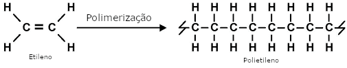

Quando falamos em polimerização podemos também falar numa reação química em cadeia entre moléculas de monómeros

Há uma unidade estrutural que se repete ao longo da cadeia da macromolécula, essa unidade designa-se por motivo
Este motivo tem origem no monómero etileno
Atendendo ao motivo que se repete, podemos representar o PE pela imagem acima
A letra n indica o número de vezes que o motivo se repete, isto corresponde ao chamado grau de polimerização
Uma macromolécula de politetileno contém, tipicamente, de 10.000 a 20.000 unidades do respetivo motivo, o que corresponde a uma massa molar de 280.000 a 560.000 g/mol
Apesar da designação, no polietileno, não há ligações duplas, por isso, este designa-se por um hidrocarboneto saturado
É devido à impossibilidade prática de controlar a reação de polimerização que se obtém macromoléculas de tamanhos variados, conforme o grau de polimerização